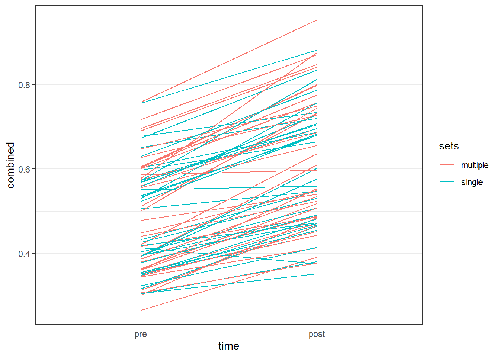

Assignment 5: Analyzing repeated measures experiments.
Introduksjon
Styrketrening har blitt bevist å ha en preventativ og behandlende effekt mot livsstilsykdommer og diverse helseutfordringer (Westcott 2012). Den allmenne befolkningen blir anbefalt å trene styrketrening, men undersøkelser viser at de færreste følger denne anbefalingen (“Statistikk om fysisk aktivitetsnivå og stillesitting,” n.d.). En faktor som hindrer noen for styrketrening er mangel på tid (Choi et al. 2017) og det skulle i disse tilfellene være gunstig å kunne trene styrketrening med mest mulig effekt på kort tid.
Effekten av styrketrening er avhengig av og kan manipuleres av ulike variabler som belastning, antall sett og varighet på pause (“Progression Models in Resistance Training for Healthy Adults” 2009). Det er gjort flere forsøk på å sammenligne effekten av styrketrening som kommer av å trene ett eller få sett i motsetning til flere sett. Forsøkene får varierte utfall hvor blant annet Cannon and Marino (2010) fant at personer fikk samme effekt på muskelstyrke og muskelmasse av å trene styrketrening med ett og tre sett. Likevel viser en metaanalyse at det er en sammenheng mellom treningsdose og treningsrespons som antyder at flere sett vil gi bedre effekt av styrketrening (Schoenfeld, Ogborn, and Krieger 2017).
Dersom man oppnår samme effekt av styrketrening på mindre tid kan det være en løsning for å få flere til å gjøre styrketrening hvor tidsbruk blir en mindre utfordring. Denne studien skal undersøke om personer får samme effekt på muskelmasse og muskelstyrke ved å trene ett sett eller tre sett med styrketrening.
Metode
Deltakere og studieoversikt
Forsøket ble gjennomført på 34 deltakere i alderen 18-30 år, bestående av 18 kvinner (alder 22 ±1,3) og 16 menn (alder 23,6 ±4,1). Deltakerne hadde ikke trent strukturert styrketrening de siste 12 månedene og hadde ingen skade, sykdom eller medisiner som kunne påvirke effekten av styrketrening.
Intervensjonen besto av 12 uker styrketrening for helkropp. Benøvelsene ble gjort unilateralt og deltakerne ble tilfeldig fordelt hvilket ben som skulle trene ett sett og hvilket som skulle trene tre sett. Muskelstyrke ble målt ved baseline, uke 3, 5 og 9, og etter endt intervensjon. Kroppssammensetning ble målt ved baseline og etter intervensjonen.
Styrketreningsprotokoll
Alle deltakerne gjennomførte følgende oppvarming før treningsøkten: 5 minutter sykling (RPE 12-14), 10 repetisjoner armhevinger, sit-ups, rygghev og knebøy med kun kroppsvekt, og 10 repetisjoner på 50% av 1RM i hver styrkeøvelse. Underkroppsøvelser ble gjort med enten ett sett eller tre sett per bein. Øvelsene de gjorde var benpress, lårcurl og kneekstensjon. Overkroppsøvelsene ble gjort bilateralt og var øvelsene benkpress, nedtrekk, skulderpress og sittende roing. Det var 90-180 sekunder pause mellom hvert sett. I uke 1-2 trente de med intensitet på 10RM, uke 3-5 på 8RM og uke 6-12 på 7RM.
Måling av muskelstyrke
Isokinetisk og isometrisk styrke i kneekstensjon ble gjort i dynamometer. Isokinetisk styrke ble målt på vinkelhastighetene 60, 120 og 240 grader i sekundet. Isometrisk styrke ble målt i en vinkel på 30 grader i kneleddet.
Maksimal muskelstyrke ble målt i form av 1RM i øvelsene benpress og kneekstensjon.
Måling av kroppsammensetning
Kroppssammensetning ble målt før og ette treningsintervensjon i DXA. Deltakerne måtte faste 2 timer før målingen og unngå hard fysisk aktivitet de siste 48 timene.
Resultater
Lean mass
Styrke

Diskusjon
Referanseliste
Cannon, Jack, and Frank E. Marino. 2010. “Early-Phase Neuromuscular Adaptations to High- and Low-Volume Resistance Training in Untrained Young and Older Women.” Journal of Sports Sciences 28 (14): 1505–14. https://doi.org/10.1080/02640414.2010.517544.
Choi, Jaesung, Miyoung Lee, Jong-koo Lee, Daehee Kang, and Ji-Yeob Choi. 2017. “Correlates Associated with Participation in Physical Activity Among Adults: A Systematic Review of Reviews and Update.” BMC Public Health 17 (1): 356. https://doi.org/10.1186/s12889-017-4255-2.
“Progression Models in Resistance Training for Healthy Adults.” 2009. Medicine & Science in Sports & Exercise 41 (3): 687708. https://doi.org/10.1249/MSS.0b013e3181915670.
Schoenfeld, Brad J., Dan Ogborn, and James W. Krieger. 2017. “Dose-Response Relationship Between Weekly Resistance Training Volume and Increases in Muscle Mass: A Systematic Review and Meta-Analysis.” Journal of Sports Sciences 35 (11): 1073–82. https://doi.org/10.1080/02640414.2016.1210197.
“Statistikk om fysisk aktivitetsnivå og stillesitting.” n.d. https://www.helsedirektoratet.no/tema/fysisk-aktivitet/statistikk-om-fysisk-aktivitetsniva-og-stillesitting.
Westcott, Wayne L. 2012. “Resistance Training Is Medicine: Effects of Strength Training on Health.” Current Sports Medicine Reports 11 (4): 209216. https://doi.org/10.1249/JSR.0b013e31825dabb8.